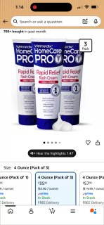
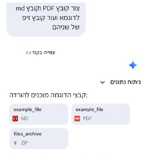

WIREDנמוכה02.05.2026, 00:00
Tim Cook was a great CEO, but he didn’t crack AI. It’s job number 1 for John Ternus.
אימות 1
Tim Cook was a great CEO, but he didn’t crack AI. It’s job number 1 for John Ternus.
לפי דיווח בבלומברג, אנתרופיק עשויה להפוך לחברה הפרטית היקרה ביותר בעולם - ותחליף את OpenAI שגייסה במרץ לפי שווי של 852 מיליארד דולר. המגעים עם המשקיעים נמצאים בשלבים מוקדמים מאוד. בפברואר גייסה מפתחת קלוד לפי שווי של 380 מיליארד דולר

Build American AI, a nonprofit linked to a super PAC bankrolled by executives at OpenAI and Andreessen Horowitz, is funding a campaign to spread pro-AI messaging and stoke fears about China.

Messages presented at trial reveal how Zilis, the mother of four of Musk’s children, acted as an intermediary between him and OpenAI.

מ-IBM, דרך סיילספורס ועד לסטארט-אפים ישראלים, בחלק מחברות ההייטק עוברים לגייס לפי כישורים, לא לפי ותק וניסיון, וכך, סטודנטים ואקדמאים טריים עם גישה ל-AI מצליחים לעקוף את המסלול המסורתי - היישר לתפקידי המפתח

פרויקט והמלצות למפתחים. בדרך כלל, קבצים כאלה נשמרים בתוך ה-repositories של קוד המקור ולא אמורים להגיע לגרסה הסופית של האפליקציה המופצת למשתמשים. טעות מביכה 📖 #Apple #בינהמלאכותית 📱 📱 📱

זוכרים את הביף בין הפנטגון לאנתרופיק? עכשיו מתפרסם שגוגל חתמה סופית על עסקה שמאפשרת לפנטגון להשתמש בGemini בסביבות מסווגות לכל מטרה חוקית שהממשל יראה לנכון.

תכירו את Qwen3.6-27B: המודל החדש שטורף את הקלפים! 🚀🧠 עליבאבא משחררת דגם "צפוף" (Dense) ופתוח בנפח 27B פרמטרים, והוא מוכיח שגודל זה לא הכל. מה חדש מתחת למכסה המנוע?

חיבור יכול להתבצע ממש בקלות דרך Zapier. קיים קונקטור לקלוד דסקטופ וזה פשוט מושלם! אפשר לקבל תובנות בצורה ברורה, לחבר סקילים ולייצר טקסטים ומודעות מעוצבות בקלות יתירה (עם ננו בננה) - מה שאמור להוביל ליותר המרות ויישום יעדים עסקיים - ולהצדיק את השימוש בקלוד

תי עם AI ש״נחשף״ כשעוברים על התמונה עם העכבר ויצא ממש מגניב!

אלו הפכו לטרלול מוחלט. באחד הפרקים, ה-AI פרסם קרם נגד תפרחת חיתולים וחזר על משפטי שיווק שחוקים. כשמשתמש שאל בצ'אט איך הקרם יעזור לו, ה-AI ענה: "הקרם הזה מושלם עבור סוג כזה של גירוי".
חברת Cloudflare השיקה כלי חדש המיועד לבדיקת מוכנות האתרים שלכם לעבודה מול סוכני בינה מלאכותית (AI) 🤖. התהליך פשוט: יש להזין את כתובת האתר, והכלי יבצע ניתוח מקיף להערכת יכולת התקשורת של סוכני בינה מלאכותית עם האתר.

ג׳מיני יכול עכשיו ליצור ולשלוח לכם קבצים להורדה, פשוט תבקשו. טוב מאוחר מלעולם לא. בינה מלאכותית בטלגרם - t.me/AI_tg_il

סופר את האובייקטים ובודק את מיקום האלמנטים, ורק לאחר מכן מחולל את התמונה. תהליך זה מפחית משמעותית את מספר הניסיונות עד להשגת התוצאה המבוקשת. התמונות מופקות ברזולוציית 4K, והטקסט המופיע בהן קריא לחלוטין – כולל בטבלאות, אינפוגרפיקות וכיתובים של ממשקי משתמש.

הסגנון שאני רוצה לקרוסלה, וגם זה הפך לסקיל, מה שאומר שמעכשיו אוכל סופסוף ליצור קרוסלות בקלות! מוזמנים להציץ:

בוטוקס, איפור ומה לא. מסכן הנסיך הניגרי הוא מאבד כל עוקץ אפשרי הפרומפט שהשתמשתי בו: Create a hairstyle analysis graphic using this portrait.

look like it was drawn by a 10-year-old child. Use random, soft, childlike lipstick colors instead. Make everything look slightly uneven, messy, and playful, like a child's drawing. Draw it as if it were on plain white paper with visible lipstick strokes and rough outlines.
ם היסטוריית צ'אט קבועה.

הפוסט מציג טענת "חינם", אבל בלי אימות ברור מול המוצר הרשמי, ולכן צריך לראות בזה טענה שדורשת בדיקה.

הפוסט מציג טענת "חינם", אבל בלי אימות ברור מול המוצר הרשמי, ולכן צריך לראות בזה טענה שדורשת בדיקה.

תוכן שיווקי:

הפוסט מציג טענת "חינם", אבל בלי אימות ברור מול המוצר הרשמי, ולכן צריך לראות בזה טענה שדורשת בדיקה.
Lovable שחרה אתמול אפליקציה לנייד. 🍏 להורדה לאייפון 📱 להורדה לאנדרואיד בינה מלאכותית בטלגרם - t.me/AI_tg_il

הפוסט מציג טענת "חינם", אבל בלי אימות ברור מול המוצר הרשמי, ולכן צריך לראות בזה טענה שדורשת בדיקה.
איראן? "נראה אם נדרשת עוד 'הבהרה' כדי שיישבו למו"מ". רחפני הנפץ? "אין פתרון קסם, לא להתבייש להשתמש ברשתות פשוטות". 7 באוקטובר? "משהו עמוק נשבר, התפיסה לפני האסון הייתה שגויה". סערת הפסקת ההתנדבות: "הלוחמים התייצבו למשימה, למרות הביקורות הלא-ענייניות".
חמינאי איים כי "המקום היחיד של ארה"ב במפרץ הוא מעמקי הים", אך במקביל טהרן העבירה לפקיסטן הצעה חדשה לסיום המלחמה. נשיא ארה"ב לא נשמע אופטימי: "לא מרוצה מההצעה. היא מבקשת דברים שאני לא יכול להסכים להם".
הבית הלבן הודיע לקונגרס במכתב רשמי כי הלחימה מול איראן ״הסתיימה״, חרף הנוכחות הצבאית האמריקנית הנמשכת באזור "האיום שאיראן מציבה על ארצות הברית ועל כוחותינו המזוינים נותר משמעותי", נכתב
משרד האוצר האמריקני כבר פרסם אזהרה, לפיה "כל מי שישלם אגרה לאיראן על מעבר במצר הורמוז - גם אם מדובר בתרומות לארגונים - מסתכן בסנקציות" בנוסף, מזכיר האוצר סקוט בסנט איים כי אם המצר לא יחזור לקדמותו - "יהיה קשה מאוד לחולדות בתוך צינור ביוב לדעת מה מתרחש בעולם
דיווח ב"בלומברג": אחרי שורת עיכובים, ובזמן שליריבות הגדולות יש כבר טילים היפרסוניים מבצעיים, ביקש פיקוד המרכז של צבא ארה"ב להשתמש ב"נשר האפל" מול איראן - למרות שהוא עדיין לא מבצעי לחלוטין. אלו הפרטים על הטיל

OpenAI's GPT-5.5 is the second AI system to complete a simulated corporate network intrusion end-to-end, raising alarms.
Hegseth delivered the in front of the House Armed Services Committee, responding to questions about whether the US is securing a strategic advantage in technology. Hello!
Major exchanges are trying to secure access to Mythos. Artificial intelligence is a Sword of Damocles dangling over crypto — but Wall Street isn’t quailing, says Coinbase.

Ripple has a lot going for it. But the cryptocurrency linked to the company isn’t doing well. What’s holding XRP back?
BitMine currently holds over 5 million ETH valued above $11.7 billion. Despite being the largest such firm—with over $11.7 billion in holdings—BitMine is currently sitting on an unrealized loss exceeding $6.3 billion due to the price decline.

עדכון קצר סביב לפני המשחק נגד הפועל פ"ת בשבת, 50 מאוהדי הירוקים הגיעו למגרש בכפר גלים, קיללו את הצוות המקצועי והבריחו את השחקנים.

עדכון קצר סביב הירושלמים חגגו 1:3 על הפועל פ"ת ועקפו את הפועל באר-שבע: "המטרה עכשיו היא לשמור על המקום הראשון עד הסיום".

כוכב בית"ר ירושלים חש רגישות בשריר התאומים ועלול לא לקחת חלק במשחק מחר (20:00, טדי) מול הכחולים. אינו (אדום), קרבאלי (צהובים) יונה (פציעה) לא ישחקו

עדכון קצר סביב אחרי שהורחק מול הפועל פ"ת, החלוץ צפוי לעמוד לוועדת משמעת פנימית וככל הנראה לא ימשיך בעונה הבאה בשורות האדומים.

שחקן הפועל ת"א הורחק אחרי שהוחלף בגלל שהניף אצבע משולשת לכיוון אוהדי היריבה, וטען לגזענות: "אני בן אדם ויש לי רגשות